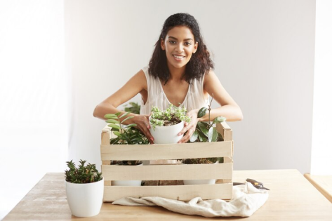

Horta Urbana
🔍
Olá, sejam bem vindos!
Bem-vindo ao Horta Urbana! Nosso objetivo é incentivar você a cultivar seus próprios alimentos orgânicos em qualquer espaço, promovendo sustentabilidade e bem-estar.
Cultivando sua própria comida! Descubra os benefícios de ter uma horta em casa.

Aprenda técnicas simples para cultivar alimentos saudáveis em pequenos espaços.

Descubra as melhores variedades para cultivo urbano.

Aprenda a fazer adubos naturais e orgânicos.